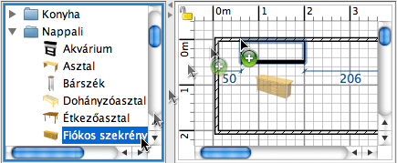

| Bútor hozzáadása | |||
Bútor, ajtó vagy ablak hozzáadásánál válasszon ki egy tárgyat, vagy akár többet is a Katalógusból és húzza be az Alaprajz ablakba, vagy a Bútorlistába.  Úgy is hozzáadhat bútorokat (akár egyszerre egynél többet) otthonához, ha kijelöli a menüben a Bútor > Hozzáadás az otthonhoz pontot, vagy használhatja a Hozzáadás az otthonhoz eszközt is.
Ha a bútorokat a Bútorlistába húzza vagy a Bútor > Hozzáadás az otthonhoz menüt használja, akkor a bútor bal felsõ sarka a (0,0) pontoknál lesz. Az otthonhoz hozzáadott bútorok megjelennek a Bútorlistában, az Alaprajz nézetben, és a 3D nézetben is. Amíg a 3D nézet betölt, addig ezek fehér színû kockákként lesznek láthatóak. |
|